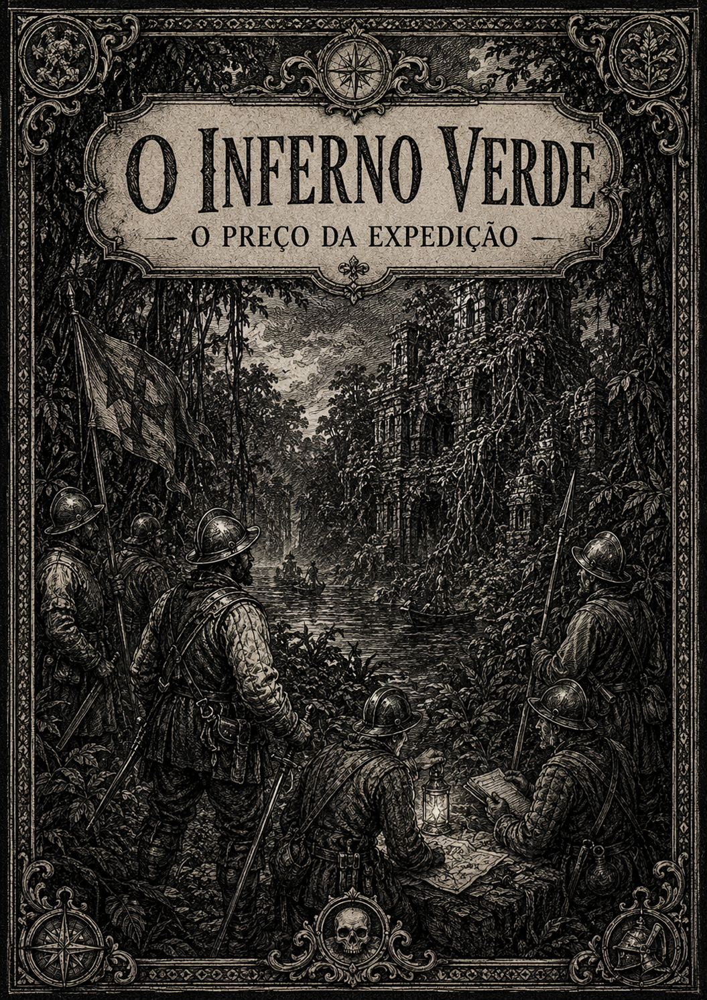
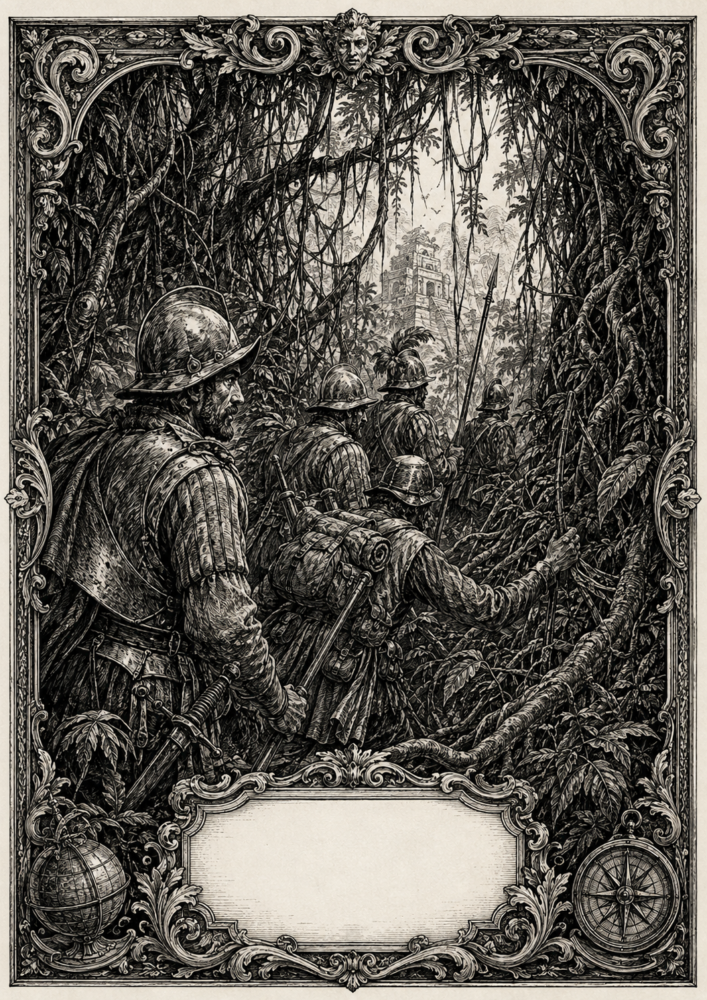
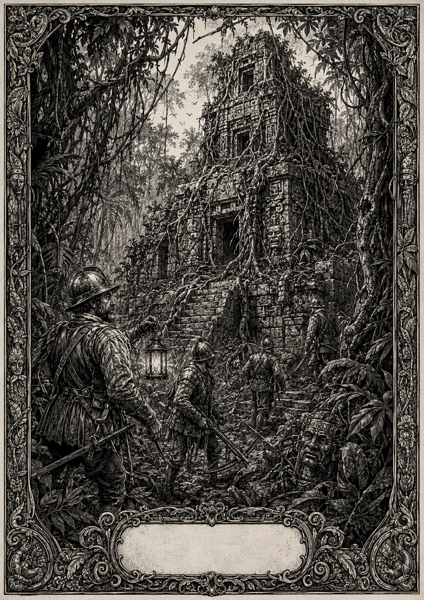
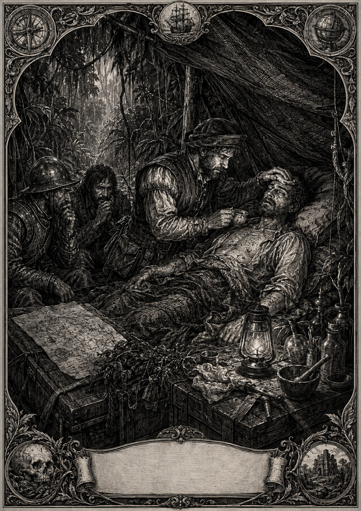
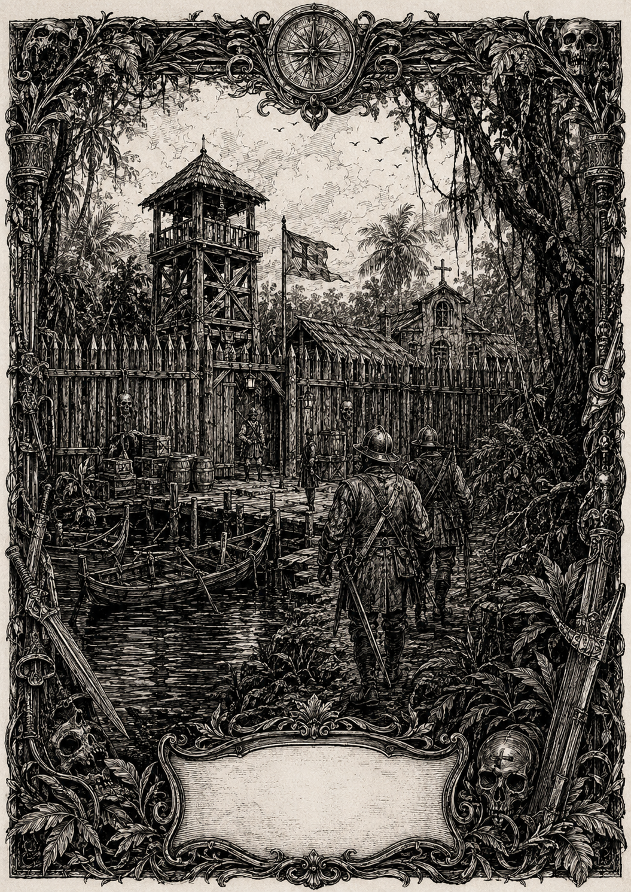
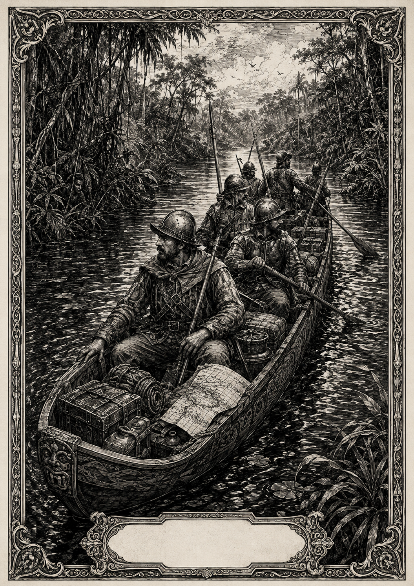
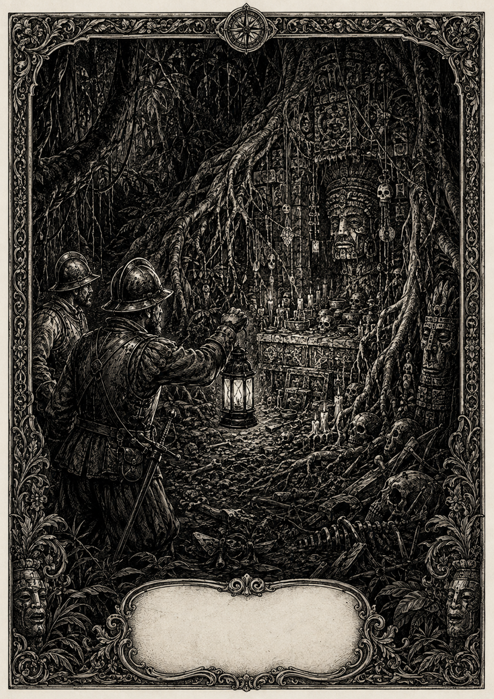
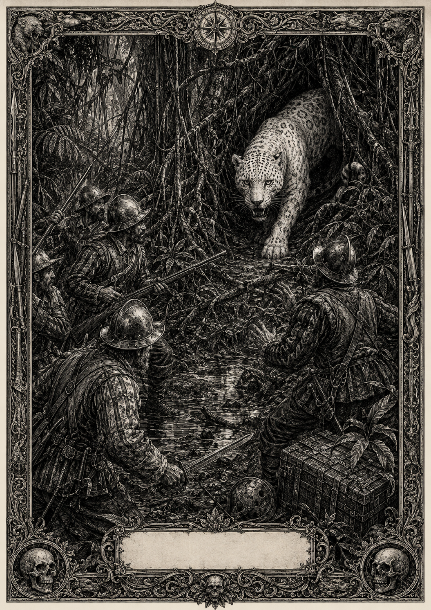
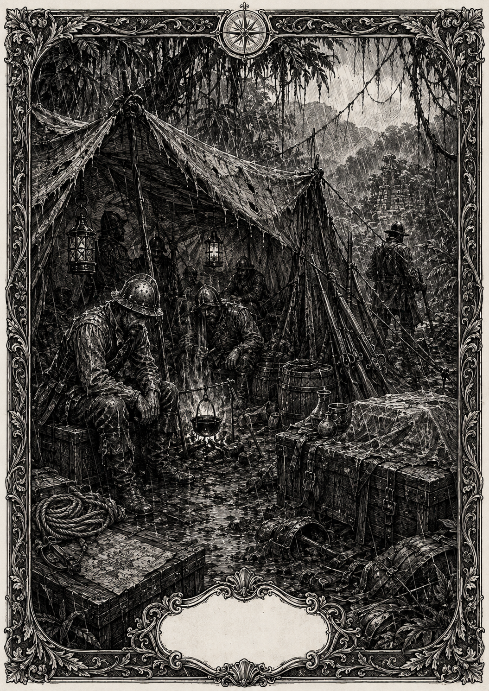
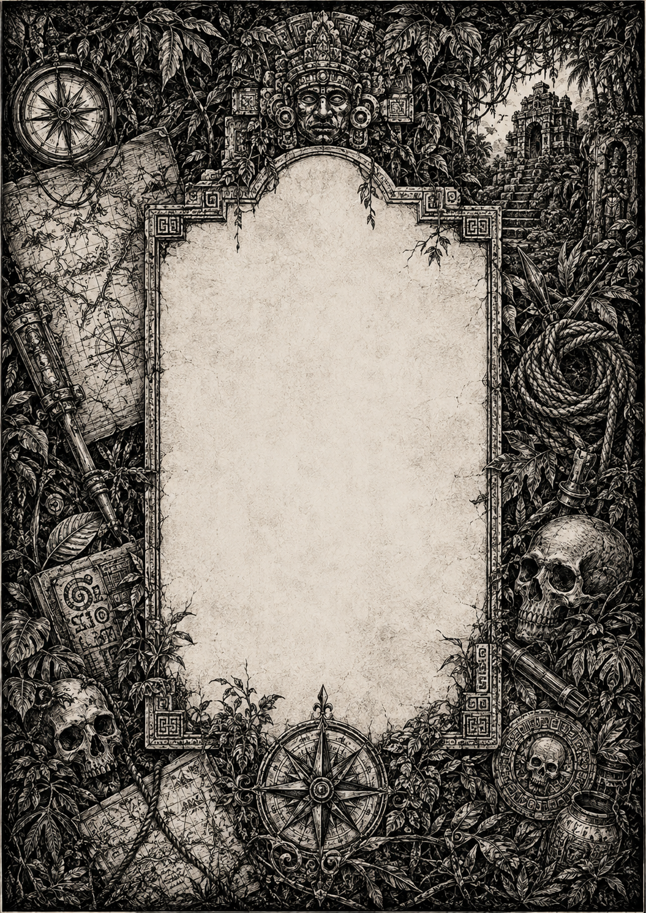

O INFERNO VERDE
O PREÇO DA EXPEDIÇÃO
Livro de Regras, Sobrevivência e Relatos do Novo Mundo
Autor: Fellipe Augusto Ugliara
Idioma: pt-BR
Gênero: RPG de exploração, sobrevivência e dark fantasy
Licença: Creative Commons Atribuição-NãoComercial-CompartilhaIgual (CC BY-NC-SA)
Um RPG de exploração, sobrevivência, desgaste e horror no Novo Mundo.
Séculos XV e XVI. A costa ficou para trás. À frente existem rios sem ponte, mata sem estrada, febres sem nome e lugares que talvez não devam constar em mapa algum.
“Casa não se come.”
— anotação atribuída a um condutor de carga, três dias antes de uma expedição abandonar o ouro que carregava.
O que é este livro
O Inferno Verde é um RPG sobre expedições terrestres pelas Américas Central e do Sul nos séculos XV e XVI. O centro do jogo não é conquistar monstros ou acumular tesouros: é continuar avançando quando tudo ocupa espaço, tudo se desgasta e toda escolha cobra alguma coisa.
A selva é uma ameaça constante. A água pode adoecer. A chuva pode inutilizar pólvora. Uma couraça pode salvar uma vida e, ao mesmo tempo, tornar a marcha um tormento. Uma bolsa de minério pode valer uma fortuna em outro lugar e ser apenas peso quando a comida acaba.
E, às vezes, existe algo além disso.
Há relatos de acontecimentos que ninguém consegue explicar com segurança. Muitos personagens podem atravessar a vida sem encontrar nada que desafie definitivamente uma explicação comum. Outros podem voltar de uma ruína com uma cicatriz que nenhum médico entende — ou convencidos de que tudo não passou de febre, medo ou coincidência.
Este livro apresenta as regras junto do cenário e de relatos de exploração, para que cada mecânica apareça dentro do mundo em que ela importa.
SUMÁRIO
- A Selva Começa Aqui
- A Regra Mais Importante
- Criando um Explorador
- Presença, Bagagem e o Preço de Continuar
- Provações
- Ocupações
- Aptidões
- Pertences e Durabilidade
- Combate
- Postos Avançados e Escambo
- Exploração e Perigos
- O Desconhecido
- Relíquias
- Criaturas e Ameaças
- Evolução do Personagem
- Ciclo de uma Expedição
- Referência Rápida
{kind=link}

1. A SELVA COMEÇA AQUI
A aventura começa quando a segurança da costa deixa de ser útil.
O grupo entra no continente e perde contato fácil com a civilização. O caminho precisa ser descoberto, aberto ou negociado. Rios interrompem a marcha. Pântanos escondem profundidade sob uma camada de folhas. O calor transforma metal em castigo. A umidade entra em cordas, couro, pólvora e feridas.
O ambiente não é apenas cenário. Ele participa do jogo.
Uma expedição precisa administrar:
- água;
- alimento;
- pólvora e munição;
- ferramentas;
- proteção;
- capacidade de carga;
- ferimentos e doenças;
- orientação;
- distância até um Posto Avançado;
- confiança entre os próprios exploradores.
Rumores de ouro, impérios distantes, riquezas ocultas, fontes da juventude e lugares impossíveis empurram pessoas para dentro da mata. O problema é que a riqueza só tem valor enquanto alguém consegue carregá-la para fora.
Fragmento de campo — O Peso do Ouro
O saco de minério pesa quase tanto quanto as rações abandonadas na margem. Hernán sorri: “Quando voltarmos, cada pedra dessas compra uma casa.”
O condutor de carga olha para as duas últimas porções de carne seca. “Casa não se come.”
Na manhã seguinte, o geógrafo esfrega uma pedra entre os dedos. “Mica.”
Atrás deles alguém pergunta: “E a comida?”
Ninguém responde.
Essa é a lógica de O Inferno Verde: o valor de um objeto depende de onde você está e do que falta para sobreviver.
2. A REGRA MAIS IMPORTANTE
Toda ação incerta usa d6.
| Situação | Rolagem | Sucesso |
|---|---|---|
| Normal | 1d6 | 4, 5 ou 6 |
| Favorável | 2d6 | basta um dado obter 4+ |
| Desfavorável | 2d6 | os dois dados precisam obter 4+ |
Se uma ação é simples, segura e não existe consequência interessante para falhar, não é necessário rolar.
Situação normal
Role 1d6.
- 4, 5 ou 6: sucesso.
- 1, 2 ou 3: falha.
Situação favorável
Role 2d6.
Basta um dos dados ter sucesso. A ação só falha se ambos falharem.
Uma situação pode se tornar favorável por experiência profissional, uma Especialidade, ajuda adequada, ferramenta apropriada, boa posição ou uma Aptidão.
Situação desfavorável
Role 2d6.
Os dois dados precisam ter sucesso. Se um deles falhar, a ação falha.
Uma situação pode se tornar desfavorável por lama, escuridão, desorientação, ferimentos, falta de descanso, equipamento inadequado, uma Provação ou outra dificuldade concreta.
Favorável e desfavorável ao mesmo tempo
Vantagens do mesmo tipo não se acumulam. Duas razões para um teste ser favorável continuam resultando em apenas 2d6; o mesmo vale para situações desfavoráveis.
Se uma situação for ao mesmo tempo favorável e desfavorável, as duas condições se anulam e o teste é normal.
Ajuda
Um aliado pode ajudar quando participa de forma concreta da ação. Para conceder situação favorável, a ajuda precisa ser plausível e a Ocupação ou uma Especialidade do ajudante deve ser relevante para o problema.
Apenas um aliado precisa ajudar; ajuda adicional não acumula dados.
Falha crítica
Algumas regras mencionam falha crítica.
- Em um teste normal, ocorre quando o dado mostra 1.
- Em um teste com 2d6, ocorre apenas quando os dois dados mostram 1.
Uma falha crítica só produz uma consequência adicional quando uma regra, um perigo ou a situação indicar isso.
Regra em uma frase
Normal: 1d6. Favorável: 2d6 e basta um sucesso. Desfavorável: 2d6 e ambos precisam ter sucesso.
{kind=link}

{kind=link}
3. CRIANDO UM EXPLORADOR
Criar um personagem exige cinco passos.
Passo 1 — Escolha uma Ocupação
A Ocupação diz quem o personagem era antes ou durante a expedição, quais tarefas conhece bem e de onde vem sua experiência.
Quando uma ação incerta estiver diretamente relacionada à Ocupação, o jogador explica como essa experiência ajuda. Se a relação fizer sentido, o teste é favorável.
A Ocupação não garante sucesso e não serve para qualquer ação. A vantagem precisa nascer de uma relação clara entre a experiência do personagem e aquilo que ele está tentando fazer.
Exemplos:
- um Cartógrafo da Coroa interpretando relevo ou procurando uma rota segura realiza um teste favorável;
- um Médico de Bordo reconhecendo uma infecção ou estabilizando um ferido realiza um teste favorável;
- um Soldado de Infantaria operando um arcabuz ou mantendo posição sob fogo pode justificar um teste favorável;
- um Herbolário da Expedição identificando uma planta ou preparando um tratamento com ervas pode justificar um teste favorável.
Passo 2 — Distribua 14 pontos
Divida 14 pontos entre:
- Presença
- Bagagem
Cada valor deve começar entre 4 e 10.
Presença
É a firmeza do personagem no mundo: saúde física, resistência e estabilidade mental.
- Presença alta significa que o personagem ainda suporta o desgaste.
- Presença baixa indica ferimentos, exaustão ou abalo.
- Presença 0 significa morte definitiva.
Bagagem
É o número máximo de espaços que o personagem suporta.
A Bagagem é ocupada por:
- Pertences — armas, ferramentas, comida, proteção e objetos encontrados;
- Provações — fome, sede, febre, ferimentos, paranoia e consequências de ocorrências inexplicáveis.
Adoecer, ferir-se ou carregar algo novo reduz o espaço disponível para o restante da expedição.
Passo 3 — Escolha 2 Aptidões
Escolha duas Aptidões livremente. Qualquer personagem pode escolher qualquer Aptidão.
Aptidões representam técnicas, recursos e capacidades especiais. Algumas exigem gasto de 1 ponto de Presença.
Gastar Presença representa esforço real. Se esse gasto reduzir a Presença a 0, o personagem morre como em qualquer outra perda de Presença.
Passo 4 — Escolha os Pertences iniciais
O personagem começa com:
- 1 arma coerente com a Ocupação;
- 1 proteção inicial, se aplicável;
- 2 utilitários coerentes com sua experiência;
- 1 Ração Seca.
A soma dos espaços ocupados não pode ultrapassar a Bagagem. Se o conjunto inicial não couber, escolha versões mais leves ou abra mão de itens até respeitar o limite.
Armas que exigem munição ou recarga precisam dos suprimentos correspondentes para funcionar durante a expedição.
Passo 5 — Dê um nome
Depois disso, o personagem está pronto para entrar na mata.
Exemplo rápido
Isabel, Cartógrafa da Coroa
Presença 7, Bagagem 7.
Aptidões: Leitura do Terreno e Navegação Terrestre.
Ela pode suportar sete espaços somando Pertences e Provações.
{kind=link}

4. PRESENÇA, BAGAGEM E O PREÇO DE CONTINUAR
Esses dois valores sustentam todo o jogo.
Presença é quanto de você ainda resta
Dano de combate reduz Presença. Algumas doenças e efeitos também podem drená-la. Certas Aptidões exigem Presença como preço.
A Presença atual nunca pode ultrapassar seu valor máximo. Quando chega a 0, o personagem morre.
Bagagem é tudo o que você insiste em levar
Cada Pertence ocupa espaço. As Provações também.
Um explorador com Bagagem 7 pode carregar, por exemplo:
- arcabuz: 2 espaços;
- pólvora: 1;
- munição: 1;
- couraça: 2;
- corda: 1.
Total: 7 espaços.
Se adquirir Ferimento Infeccionado, que ocupa 1 espaço, o total passa para 8 e ultrapassa sua Bagagem.
Colapso
Sempre que os espaços ocupados ultrapassarem a Bagagem, faça imediatamente um teste para resistir ao Colapso.
- Sucesso: o personagem continua agindo apesar do excesso até o fim da cena atual.
- Falha: perde 1 ponto de Presença e entra em Colapso. Enquanto permanecer acima do limite de Bagagem, só pode abandonar Pertences, aceitar ajuda, receber tratamento ou realizar ações indispensáveis para sair daquela condição.
- Se o personagem continuar sobrecarregado na cena seguinte, adquirir ainda mais espaços ou sofrer novo esforço intenso, deverá testar novamente.
Reduzir os espaços ocupados para um valor igual ou inferior à Bagagem encerra o Colapso.
Isso força escolhas concretas:
- abandonar equipamento;
- abandonar tesouro;
- tratar uma Provação;
- entregar carga a um aliado;
- correr o risco de continuar.
Fragmento de campo — A Bagagem de Martín
A lama chega aos joelhos. Martín cai de lado, com corda, munição, panela, manta, ferramentas e um saco de farinha presos às costas.
“Solta o saco!”, gritam.
“É a última comida!”
A lama sobe até a boca. Por fim ele larga a carga. O saco desaparece primeiro.
Martín olha para o lugar vazio. “Agora eu peso menos que a fome.”
A Bagagem transforma inventário em decisão dramática. Não existe espaço gratuito.
5. PROVAÇÕES
Provações representam desgaste físico ou mental e ocupam Bagagem.
Elas não são apenas penalidades abstratas: são consequências que permanecem com o personagem até que a causa seja resolvida ou exista tratamento adequado.
Provações comuns
| Provação | Espaço | Efeito | Remoção |
|---|---|---|---|
| Sede Extrema | 1 | O personagem não recupera Presença por descanso. | Beber água segura em quantidade suficiente. |
| Fome Debilitante | 1 | Testes de esforço físico, corrida, escalada e combate corpo a corpo são desfavoráveis. | Fazer uma refeição suficiente. |
| Febre das Selvas / Malária | 2 | Ao fim de cada dia de viagem sem estabilização ou tratamento, o personagem perde 1 ponto de Presença. | Tratamento adequado; apenas descansar não basta. |
| Ferimento Infeccionado | 1 | O personagem não recupera Presença em descanso de campo. | Tratamento adequado seguido de descanso completo. |
| Paranoia da Selva | 1 | O personagem não pode receber situação favorável por ajuda de aliados enquanto a desconfiança dominar a cena. | Apoio adequado, segurança e descanso, ou uma Aptidão capaz de removê-la. |
| Escorbuto | 1–2 | Testes de esforço físico são desfavoráveis. Se a causa persistir após outro dia de viagem, pode aumentar de 1 para 2 espaços. | Alimentação fresca adequada e descanso; casos de 2 espaços podem exigir tratamento. |
| Delírio da Selva | 1 | Testes de orientação, percepção e interpretação são desfavoráveis. | Afastar a causa e completar um descanso, ou receber tratamento apropriado. |
Tratando Provações
Uma Provação só desaparece quando sua causa pode ser enfrentada.
- Provações de 1 espaço normalmente podem ser removidas depois que a causa é resolvida e o personagem recebe tratamento ou um descanso adequado.
- Provações de 2 espaços representam condições graves. Elas precisam de tratamento apropriado; apenas descansar não basta.
- Uma Provação que esteja sendo estabilizada continua ocupando Bagagem e produzindo seus efeitos, mas não piora até que o tratamento deixe de valer.
- Receber novamente uma Provação que o personagem já possui não cria automaticamente uma cópia. Se a situação piorar, o Mestre pode aumentar sua gravidade quando houver espaço indicado, causar perda de Presença ou aplicar outra consequência coerente.
A Última Cabaça de Água
Baltasar ajoelha diante do riacho escuro.
“Não beba”, diz o herbolário.
“Então morro seco olhando água correr?”Ao anoitecer, Baltasar treme tanto que os dentes batem mais alto que os insetos. Quando abre os olhos, sussurra:
“A água ainda está falando comigo.”
A água resolve a sede apenas quando é segura o bastante para não trazer outro problema.
Provações não precisam vir de combate
Uma expedição pode se destruir sem enfrentar uma única criatura.
Chuva, fome, insetos, água contaminada, isolamento, infecção e medo são ameaças centrais.
{kind=link}
6. OCUPAÇÕES
O grupo funciona melhor quando pessoas diferentes trazem experiências diferentes para a expedição.
A principal função mecânica da Ocupação é tornar favoráveis os testes relacionados à experiência profissional do personagem. Quando houver uma ligação clara, o jogador descreve por que sua Ocupação ajuda e realiza o teste como situação favorável.
A Ocupação descreve experiência; ela não limita quais Aptidões o personagem pode aprender.
| Ocupação | Experiência |
|---|---|
| Soldado de Infantaria | Combate a pé, arcabuz, besta, pólvora e formação militar. |
| Conquistador de Terras | Combate corporal, sobrevivência e liderança pela força. |
| Batedor da Vanguarda | Rastreamento, furtividade, reconhecimento e identificação de emboscadas. |
| Guia Nativo Aliado / Intérprete | Caminhos, alimentos locais, línguas, costumes, negociação e sobrevivência. |
| Mateiro / Abrite-Caminho | Abertura de trilhas, passagens improvisadas e transporte de carga. |
| Herbolário da Expedição | Plantas úteis, venenos, ferimentos e tratamento de água contaminada. |
| Almocárem / Condutor de Carga | Organização de peso, suprimentos e proteção da carga. |
| Cartógrafo da Coroa | Orientação, leitura do terreno, mapas e rotas. |
| Médico de Bordo / Cirurgião-Barbeiro | Diagnóstico, estabilização e cirurgia de campo. |
| Padre Jesuíta | Apoio psicológico, espiritualidade, ritos e mediação de medo e superstição. |
| Geógrafo de Campo | Relevo, distâncias, abrigos e minerais. |
| Cronista de Fronteira | Registro de fauna, flora, povos, padrões e acontecimentos. |
| Caçador de Relíquias | Localização, transporte e avaliação de objetos incomuns e relatos inexplicáveis. |
| Penitente de Fronteira | Resistência ao sofrimento, disciplina, fé e vigílias. |
| Coveiro de Missão | Cadáveres, fossas, contaminação e mortes incomuns. |
| Caçador de Feras | Rastreamento de grandes predadores, armadilhas, iscas e leitura de ataques animais. |
| Guarda de Relicário | Proteção de documentos, objetos religiosos e cargas consideradas perigosas. |
| Naturalista Herege | Criaturas, deformidades e fenômenos que desafiam explicações aceitas. |
| Sobrevivente Marcado | Experiência direta com ocorrências inexplicáveis e suas consequências. |
| Caçador de Bruxaria | Rituais, acusações, fraudes, medo coletivo e relatos sem explicação segura. |
| Vigia Noturno | Guarda de acampamento, ruídos, rastros e invasões durante a noite. |
| Recuperador de Mortos | Recuperação de corpos, documentos e Pertences em ruínas e áreas perdidas. |
Ocupação é experiência, não uma classe.
Quando essa experiência se aplica diretamente ao problema, ela pode transformar um teste normal em favorável.
{kind=link}
{kind=link}
7. APTIDÕES
Cada personagem escolhe 2 Aptidões livremente. Qualquer personagem pode escolher qualquer Aptidão, independentemente da Ocupação.
A Ocupação concede situação favorável quando sua experiência se aplica a um teste. As Aptidões fazem algo além disso: criam exceções, reduzem riscos, ampliam possibilidades ou permitem esforço extraordinário.
Quando uma Aptidão torna um teste favorável, ela segue a regra normal de situações favoráveis e não acumula dados extras.
| Aptidão | Efeito |
|---|---|
| Passo Fantasma | Gaste 1 Presença para atravessar um trecho de vegetação sem deixar rastros legíveis nem produzir ruído suficiente para denunciar sua passagem, salvo quando isso for fisicamente impossível. |
| Sentido de Emboscada | Uma vez por cena, quando o grupo seria surpreendido por uma emboscada, você percebe um sinal do perigo antes do primeiro ataque. A emboscada deixa de conceder iniciativa automática aos inimigos. |
| Emboscar as Sombras | Se começar escondido, seu primeiro ataque na cena causa +1 ponto de dano e não pode ser anulado por escudo. |
| Passo de Esquiva | Uma vez por rodada, ao sofrer dano, gaste 1 Presença para reduzir esse dano em 2 pontos, até o mínimo de 0. |
| Banquete da Mata | Uma vez por dia, em ambiente onde exista alimento possível, faça uma ação de busca. Em caso de sucesso, encontra comida suficiente para alimentar até quatro pessoas naquele dia, impedindo ou removendo Fome Debilitante delas. |
| Língua da Terra | Permite comunicação rudimentar por sinais, palavras conhecidas, dialetos próximos e costumes compartilhados quando existe alguma base possível de entendimento. |
| Táticas de Guerrilha | Gaste 1 Presença quando o grupo tiver vegetação, ruínas ou terreno semelhante para se proteger. Até o início de seu próximo turno, ataques à distância contra o grupo são desfavoráveis. |
| Contra-ataque com Peçonha | Quando tiver acesso a veneno apropriado e causar dano direto à Presença com uma lâmina, pode aplicar Ferimento Infeccionado se a ficção permitir. |
| Golpe de Desbravar | Cobertura vegetal e camuflagem natural não tornam seus ataques corpo a corpo desfavoráveis. |
| Mula de Carga | Você pode carregar 1 espaço adicional de Pertence sem que ele conte para sua Bagagem. Provações nunca podem ocupar esse espaço adicional. |
| Fúria do Machado / Terçado | Gaste 1 Presença para realizar um ataque contra dois inimigos próximos na mesma ação. Faça um teste separado para cada alvo. |
| Quebrador de Escudos | Depois de acertar um alvo protegido por escudo, gaste 1 Presença para reduzir imediatamente a Durabilidade restante desse escudo a 0. |
| Disciplina de Ferro | Enquanto sua Presença estiver abaixo da metade do valor máximo, seus ataques são favoráveis. |
| Pólvora Protegida | Pólvora e armas de fogo transportadas por você não perdem utilidade automaticamente por chuva ou umidade comum. Imersão, abandono ou dano extremo ainda podem afetá-las. |
| Chuva de Chumbo / Recarga sob Pressão | Gaste 1 Presença para recarregar e disparar, na mesma ação, uma arma que normalmente exige uma ação de recarga. |
| Parede de Aço | Gaste 1 Presença para receber em seu lugar um ataque dirigido a um aliado ao seu alcance. Você pode usar seu próprio escudo e sua própria armadura contra esse ataque. |
| Investida Devastadora | Uma vez por cena, se avançar em linha reta até um alvo e acertar um ataque corpo a corpo, cause +1 ponto de dano. Se uma proteção absorver parte do golpe, ela perde 1 Durabilidade adicional. |
| Golpe Intimidador | Depois de causar 2 ou mais pontos de dano em um único ataque, gaste 1 Presença para forçar um adversário capaz de sentir medo a recuar, hesitar ou realizar sua próxima ação de forma desfavorável. |
| Leitura do Terreno | Gaste 1 Presença para identificar uma possibilidade plausível de caminho mais rápido, abrigo próximo ou fonte de água. A informação é útil, mas não garante que o local esteja livre de perigo. |
| Navegação Terrestre | Uma vez por dia de viagem, ignore uma consequência que faria o grupo se perder ou ficar desorientado. O tempo ou os recursos já gastos não são recuperados. |
| Diagnóstico Rápido | Gaste 1 Presença para remover uma Provação comum de 1 espaço causada por ferimento, doença ou veneno, se houver meios adequados, ou para estabilizar uma Provação comum de 2 espaços até o próximo descanso. |
| Cirurgia de Campo | Recupere 2 pontos de Presença de um aliado. Os instrumentos médicos perdem 1 Durabilidade. Um mesmo personagem só pode receber esse benefício uma vez entre descansos completos. |
| Palavra de Alento | Gaste 1 Presença para remover Paranoia da Selva ou outra Provação mental comum de 1 espaço de um aliado, quando houver tempo para conversar e acalmá-lo. |
| Martírio Inabalável | Gaste 1 Presença para transferir para si uma Provação mental de 1 espaço de um aliado. A Provação mantém o mesmo efeito e continua ocupando Bagagem. |
| Triagem de Campo | Uma vez por dia, em ambiente adequado, faça uma ação de busca. Em caso de sucesso, recolha um ingrediente natural que ocupa 1 espaço e pode ser consumido para remover Ferimento Infeccionado. |
| Destilar Antitoxinas | Gaste 1 Presença e use materiais adequados para neutralizar um veneno antes que ele provoque uma nova Provação ou perda adicional de Presença. |
| Olho para o Minério | Você distingue minério promissor de material sem valor evidente e reconhece sinais de qualidade. Quando houver dúvida ou risco, testes relacionados à avaliação mineral são favoráveis. |
| Avaliação de Riscos | Uma vez por perigo ambiental, impeça a perda de 1 Durabilidade de um Pertence que você consiga proteger ou preparar a tempo. |
| Estudo de Costumes | Depois de observar um grupo, ritual, padrão de patrulha ou comportamento recorrente, escolha um aliado. O próximo teste desse aliado para prever ou evitar uma ação daquele grupo é favorável. |
| Mente Analítica / Sangue Frio | Quando receber uma Provação mental de 1 espaço, gaste 1 Presença para ignorar seu efeito mecânico até o fim da cena. A Provação continua ocupando Bagagem. |
| Luvas Antes da Curiosidade | Uma vez por expedição, evite uma Provação causada apenas pelo contato físico inicial com uma relíquia ou objeto associado ao desconhecido. Isso não protege contra uma tentativa deliberada de provocar seu efeito. |
| Peso da História | Ao examinar um objeto antigo, identifica sinais de uso, transporte, reparo ou ocultação que seriam perceptíveis a um observador experiente. Isso não revela a causa de ocorrências inexplicáveis. |
| Embalar o Impossível | Escolha um objeto associado ao desconhecido que você esteja transportando. Enquanto permanecer cuidadosamente embalado e sob sua guarda, ele não ocupa espaço de Bagagem. Apenas um objeto pode receber esse benefício por vez. |
| Dor Familiar | Uma vez por descanso, ignore até o fim da cena os efeitos mecânicos de uma Provação de 1 espaço. A Provação continua ocupando Bagagem. |
| Vigília Penitente | Gaste 1 Presença para permanecer acordado por uma noite inteira sem sofrer as penalidades de falta de descanso. Você não recupera Presença nessa noite. |
| Última Oração | Quando um aliado chegaria a 0 Presença, gaste 1 Presença para mantê-lo com 1 Presença até o fim da cena. Se ele não receber cura antes do fim da cena e ainda depender dessa Aptidão para permanecer com 1 Presença, morre. Cada aliado só pode receber esse benefício uma vez por expedição. |
| Olho para a Morte | Ao examinar um cadáver, identifica sinais evidentes de doença, violência, veneno, tempo aproximado de morte ou decomposição anormal quando essas pistas existem. |
| Mãos de Cal | Testes para lidar com fossas, cadáveres contaminados e descarte de restos perigosos são favoráveis. Uma falha comum não causa contaminação automática; outra consequência ainda pode ocorrer. |
| Nada se Levanta Duas Vezes | Contra uma criatura que parecia morta ou completamente imóvel antes de atacar, seu primeiro ataque contra ela é favorável e ignora 1 ponto de absorção de proteção natural, se houver. |
| Sangue no Mato | Depois de encontrar um rastro de sangue recente, você consegue seguir a criatura ferida mesmo sob chuva ou vegetação fechada, salvo quando algo realmente apaga ou interrompe a trilha. |
| Isca Cruel | Com tempo e material apropriado, prepare uma isca. Se a criatura-alvo se aproximar para investigá-la, ela revela sua presença antes de poder receber vantagem de emboscada. |
| Mira no Tendão | Depois de acertar um ataque, gaste 1 Presença para reduzir a mobilidade do alvo até o fim da cena ou até que ele consiga se libertar, tratar ou compensar o ferimento. |
| Corpo entre a Relíquia e o Mundo | Quando uma consequência física imediata atingiria o portador de um objeto que você esteja protegendo e você puder alcançá-lo, pode receber essa consequência em seu lugar. |
| Lacre de Segurança | Com materiais comuns, prepara um lacre que revela se um recipiente, porta ou embrulho foi aberto, movido ou violado. |
| Juramento de Custódia | Enquanto transportar um objeto designado, testes para resistir a intimidação ou coerção destinadas a fazê-lo abandonar esse objeto são favoráveis. Se for forçado fisicamente, a Aptidão não impede a perda. |
| Anatomia Impossível | Depois de observar uma criatura durante uma rodada, identifica uma característica física explorável. O próximo aliado a agir contra ela realiza o teste de ataque de forma favorável. |
| Coleção Repugnante | Pode retirar uma amostra de criatura ou fenômeno quando houver material recuperável. A amostra ocupa 1 espaço e pode servir posteriormente para investigação ou escambo especializado. |
| Teoria que Ninguém Aceita | Gaste 1 Presença para formular uma hipótese útil sobre um fenômeno estranho. O Mestre informa uma possibilidade plausível sustentada pelas pistas disponíveis, nunca uma certeza. |
| Já Vi Pior | A primeira Provação mental causada por uma ocorrência inexplicável em cada expedição ocupa 1 espaço a menos, até o mínimo de 0. |
| Cicatriz que Arde | Uma vez por expedição, pergunte ao Mestre se há nas proximidades algum sinal semelhante às ocorrências inexplicáveis que já marcaram seu personagem. A resposta indica apenas presença ou ausência de um indício, nunca natureza ou localização exata. |
| Voltar do Limiar | Uma vez por expedição, quando uma Provação do Desconhecido faria você entrar em Colapso, descarte imediatamente um Pertence de pelo menos 1 espaço. Se voltar ao limite de Bagagem, não sofre os efeitos do Colapso. |
| Fraude Antes do Demônio | Testes para identificar truques, falsos milagres, encenações e manipulações são favoráveis. Em caso de sucesso, o Mestre aponta pelo menos um indício concreto que sustenta a fraude. |
| Interrogatório de Superstição | Depois de ouvir várias testemunhas, consegue separar detalhes que se repetem de rumores contraditórios. Isso não determina qual versão é verdadeira. |
| Círculo de Precaução | Gaste 1 Presença e materiais comuns para preparar um perímetro simbólico. Durante uma noite, testes do grupo para perceber aproximações ou violações do acampamento são favoráveis. Ninguém sabe dizer se o efeito vem do ritual, da disciplina ou da coincidência. |
| Sono de Um Olho | Você pode cumprir um período normal de vigília durante a noite e ainda receber todos os benefícios de um descanso de campo. |
| Contar Passos no Escuro | Quando o ambiente permite ouvir a aproximação, identifica aproximadamente o número, a direção e o porte de criaturas antes de vê-las. |
| Fogo Baixo | Você mantém uma fogueira funcional com pouca luz e fumaça. Testes feitos à distância para localizar o acampamento pelo fogo são desfavoráveis. |
| Nada Fica para Trás | Quando o tempo só permitir recuperar um Pertence de um cadáver ou ruína antes que o perigo piore, você consegue retirar dois. |
| Conheço o Cheiro | Quando cheiro ou sinais de decomposição podem ser percebidos, você identifica sua direção aproximada sem teste. Testes para localizar precisamente cadáveres ocultos ou locais recentemente abandonados são favoráveis. |
| Saída Antes da Ganância | Uma vez por cena, ao abandonar voluntariamente saque ou carga para escapar, o primeiro teste de fuga é favorável. |
8. PERTENCES E DURABILIDADE
Na selva, equipamento é proteção contra o ambiente — e também peso.
Os valores de Durabilidade indicados abaixo são os valores máximos dos itens quando estão em bom estado.
Armas e ferramentas de combate
| Item | Espaço | Dano | Durabilidade | Mãos | Uso |
|---|---|---|---|---|---|
| Facão de Mato / Terçado | 1 | 1 | 4 | 1 | Abre vegetação e serve para combate próximo. |
| Espada Pesada de Toledo | 1 | 2 | 5 | 1 | Arma robusta para golpes fortes e uso prolongado. |
| Alabarda / Lança de Caça | 2 | 2 | 3 | 2 | Mantém ameaças à distância e auxilia na caça. |
| Besta de Caça / Balestra | 2 | 3 | 4 | 2 | Disparo silencioso. Depois de atirar, exige uma ação para recarregar. |
| Arcabuz / Mosquete de Mecha | 2 | 4 | 3 | 2 | Exige pólvora e bala. Depois de atirar, exige uma ação para recarregar. |
| Machado Curto de Lenhador | 1 | 2 | 4 | 1 | Corta madeira, abre caminho e funciona como arma pesada. |
| Pique de Caça | 2 | 2 | 4 | 2 | Ajuda a manter criaturas grandes à distância. |
| Pistola de Roda | 1 | 3 | 2 | 1 | Exige pólvora e bala. Depois de atirar, exige uma ação para recarregar. |
| Martelo de Guerra | 1 | 2 | 5 | 1 | Útil contra superfícies rígidas e proteções. |
| Rede de Captura | 1 | — | 2 | 2 | Em um teste bem-sucedido, pode restringir um alvo de tamanho compatível; os testes físicos do alvo tornam-se desfavoráveis até ele se libertar. |
Proteções
Apenas uma armadura pode fornecer absorção de dano por vez. Colete e Couraça não acumulam suas absorções.
Escudos exigem uma mão livre. Enquanto estiver usando uma arma de duas mãos, o personagem não pode manter um Escudo pronto para bloquear.
| Item | Espaço | Durabilidade | Efeito |
|---|---|---|---|
| Colete de Couro Endurecido | 1 | 2 | Absorve até 1 ponto de dano por ataque. |
| Armadura de Peito de Aço / Couraça | 2 | 4 | Absorve até 2 pontos de dano por ataque. |
| Escudo de Madeira e Couro / Rodela | 1 | 3 | Uma vez por rodada, pode anular um ataque inteiro ao perder 1 Durabilidade. |
| Casaco de Couro Encerado | 1 | 3 | Protege suprimentos pessoais contra chuva e umidade leve. |
| Elmo de Ferro | 1 | 3 | Quando um impacto ou queda ameaça diretamente a cabeça, pode perder 1 Durabilidade para reduzir em 1 o dano recebido. |
| Manto Mosquiteiro | 1 | 2 | Testes para evitar insetos e parasitas durante o descanso são favoráveis. |
Ferramentas e suprimentos
| Item | Espaço | Durabilidade / Usos | Função |
|---|---|---|---|
| Ração Seca | 1 | 1 dia | Alimenta uma pessoa durante um dia de viagem. |
| Barril de Pólvora Seca | 1 | 10 tiros | Cada disparo de arma de fogo consome uma carga de pólvora. |
| Bolsa de Balas de Chumbo | 1 | 10 tiros | Cada disparo de arma de fogo consome uma bala. |
| Aljava de Virotes | 1 | 10 tiros | Cada disparo de besta consome um virote. |
| Cordas de Cânhamo e Ganchos | 1 | Durabilidade 2 | Travessias, escaladas, resgates e amarrações. |
| Kit de Limpeza e Óleo Animal | 1 | 2 usos | Em pausa segura, cada uso restaura 1 Durabilidade de uma arma ou ferramenta. |
| Instrumentos Médicos | 1 | Durabilidade 3 | Necessários para Cirurgia de Campo e procedimentos médicos mais invasivos. |
| Lampião de Óleo | 1 | Durabilidade 2 | Fonte portátil e controlável de luz. |
| Frasco de Óleo | 1 | 3 usos | Combustível, manutenção e improvisos. |
| Caixa de Sal | 1 | 4 usos | Conserva alimentos e pode ser valiosa em escambo. |
| Pá Curta | 1 | Durabilidade 4 | Escava solo, fossas e trincheiras. |
| Serra de Campo | 1 | Durabilidade 3 | Corta madeira com mais eficiência que uma lâmina de combate. |
| Estojo de Costura Pesada | 1 | 3 usos | Repara tecidos, mochilas, correias e mosquiteiros. |
| Cantil de Metal | 1 | Durabilidade 4 | Quando cheio, guarda água suficiente para uma pessoa durante um dia de viagem. |
| Manta Encerada | 1 | Durabilidade 3 | Protege carga ou pessoa da chuva durante o repouso. |
| Caixa de Velas | 1 | 6 usos | Iluminação pequena e transportável. |
| Corrente e Cadeado | 1 | Durabilidade 4 | Protege caixas, portas improvisadas ou cargas sensíveis. |
| Kit de Coleta Naturalista | 1 | Durabilidade 2 | Permite retirar e preservar amostras. |
| Mortalha de Linho | 1 | 2 usos | Transporta cadáveres, cobre contaminados ou serve como tecido resistente. |
Durabilidade
Quando a Durabilidade chega a 0:
- o item fica Quebrado;
- não cumpre sua função;
- continua ocupando Bagagem;
- precisa ser descartado ou reparado.
Armas e ferramentas podem perder Durabilidade por falha crítica quando a falha realmente força o equipamento, além de uso extremo, barro, umidade, quedas ou outros desgastes coerentes.
Armaduras perdem Durabilidade igual ao dano que absorvem. Um item nunca perde mais Durabilidade do que ainda possui.
Reparo
Em uma pausa segura, ferramentas adequadas podem recuperar equipamentos quando a situação permitir.
O Kit de Limpeza e Óleo Animal restaura 1 Durabilidade por uso em armas ou ferramentas. Reparos maiores, proteções danificadas e itens quebrados normalmente exigem um Posto Avançado e materiais apropriados.
Fragmento de campo — A Pólvora Molhada
A chuva cai de lado. Tomás cobre o arcabuz com o corpo.
“Acende a mecha!”Uma tentativa. Duas. Três. Nada.
Entre as folhas algo pesado se move.
“Está molhada.”
“Eu sei que está molhada!”Tomás saca a espada. “Então hoje descobrimos quanto vale o ferro.”
Dois olhos aparecem na vegetação.
“Menos que pólvora seca”, responde o companheiro.
Equipamento forte não significa equipamento confiável em qualquer condição.
{kind=link}
{kind=link}
{kind=link}
9. COMBATE
O combate usa a mesma mecânica das demais ações incertas.
Rodadas e ações
Em uma rodada, cada personagem e cada ameaça capaz de agir recebe um turno.
Em seu turno, alguém pode se deslocar uma distância curta e realizar uma ação relevante, como:
- atacar;
- recarregar;
- tentar se libertar;
- usar uma ferramenta;
- prestar primeiros socorros;
- realizar outra ação que caiba em poucos segundos.
O lado que iniciou o confronto ou surpreendeu o outro age primeiro. Quando isso não estiver claro, os jogadores escolhem um personagem para agir primeiro. Depois, os lados alternam turnos sempre que possível até todos terem agido.
Ataques
Um ataque é uma ação incerta.
- Personagens fazem seus próprios testes de ataque.
- O Mestre testa os ataques das ameaças.
- Ocupação, terreno, surpresa, cobertura, Aptidões e Provações podem tornar o ataque favorável ou desfavorável.
Quando um ataque acerta:
- o alvo pode usar um Escudo, se tiver direito a fazê-lo;
- a Armadura absorve dano;
- o dano restante reduz Presença;
- Presença 0 significa morte.
Recarga
Depois de disparar uma besta, arcabuz, mosquete ou pistola, a arma fica descarregada.
É preciso gastar uma ação para recarregá-la antes de disparar novamente.
Armas de fogo também consomem uma carga de pólvora e uma bala por disparo. Bestas consomem um virote.
Essa recarga é o principal contrapeso para o dano elevado das armas à distância.
Escudos
Um Escudo pode anular todo o dano de um ataque ao perder 1 Durabilidade.
Isso só pode ser feito uma vez por rodada e exige que o personagem esteja consciente, com o escudo em mãos e capaz de perceber ou reagir ao ataque.
Armaduras
A Armadura absorve dano até seu limite por ataque.
Sua Durabilidade diminui em quantidade igual ao dano absorvido. Quando chega a 0, deixa de proteger.
Sem proteção
Dano não absorvido reduz diretamente a Presença.
Combate é perigoso porque tudo se soma
Um personagem pode vencer uma luta e ainda sair pior para a expedição:
- perdeu Presença;
- gastou munição;
- perdeu Durabilidade;
- ganhou uma Provação;
- teve de abandonar um Pertence para evitar Colapso.
O objetivo não é vencer todos os confrontos
O objetivo é sobreviver à expedição inteira.
{kind=link}

10. POSTOS AVANÇADOS E ESCAMBO
Postos Avançados são os principais refúgios dentro do continente.
Podem ser:
- paliçadas;
- missões;
- acampamentos fortificados;
- pontos isolados de presença organizada.
Ali, a expedição pode respirar.
Descansar
Uma noite completa em um Posto Avançado, com água e alimento, recupera 2 pontos de Presença.
O personagem pode continuar descansando em noites seguintes para recuperar mais Presença, respeitando seu valor máximo.
Provações comuns de 1 espaço podem ser removidas se sua causa tiver sido resolvida e houver tratamento adequado. Provações de 2 espaços exigem tratamento específico. Provações do Desconhecido não desaparecem automaticamente em um Posto.
Reparar
Com materiais e ferramentas disponíveis, um Posto Avançado pode restaurar a Durabilidade de equipamentos até o valor máximo indicado na tabela.
Materiais raros, peças específicas ou itens severamente danificados podem exigir escambo ou trabalho especializado.
Fazer escambo
Não existe uma economia de fronteira baseada apenas em moedas.
As trocas são diretas. O valor depende da necessidade.
Em determinado momento:
- uma ração pode valer mais que prata;
- pólvora seca pode valer mais que joias;
- uma ferramenta pode valer mais que ouro;
- uma relíquia pode ser valiosa ou simplesmente perigosa demais para carregar.
O Posto Vazio
A paliçada surge ao fim da tarde. Portão aberto. Nenhuma sentinela.
Dentro, camas feitas, água nos barris, comida nas mesas.
O cronista encontra uma página presa sob uma caneca:
NÃO DURMAM AQUI.
“Isso é brincadeira”, diz o soldado.
Do andar de cima vem o som de alguém arrastando uma cadeira.
Nem todo lugar que parece um Posto continua sendo um refúgio.
{kind=link}

{kind=link}
{kind=link}
11. EXPLORAÇÃO E PERIGOS
A exploração é principalmente terrestre.
A floresta é densa, úmida, escura e lenta. Rios quebram rotas. Lama segura pernas. Insetos transformam uma noite de descanso em início de febre.
Comida e água
Ao fim de cada dia de viagem, cada personagem precisa ter consumido:
- 1 Ração Seca ou alimento equivalente;
- água segura suficiente para o dia.
Sem alimento, recebe Fome Debilitante. Sem água segura, recebe Sede Extrema.
Um Cantil de Metal cheio guarda a quantidade diária de água de uma pessoa e pode ser reabastecido quando o grupo encontra uma fonte considerada segura. Beber água duvidosa pode evitar a Sede e ainda assim provocar doença ou outra Provação.
Descanso de campo
Uma noite completa de descanso em acampamento razoavelmente seguro, com alimento e água, recupera 1 ponto de Presença.
Quem passa a noite inteira sem dormir não recupera Presença e, até completar um descanso, realiza de forma desfavorável testes de percepção, orientação e esforço físico.
Algumas Provações podem impedir essa recuperação.
Perigos
Os perigos abaixo podem cobrar tempo, recursos, orientação, Durabilidade, Presença ou Provações.
| Perigo | Consequência |
|---|---|
| Chuva Torrencial | Molha pólvora, estraga materiais e transforma o solo em lama. |
| Lamaçal / Areia Movediça | Pode prender exploradores e obrigá-los a abandonar carga; em situação severa, pode exigir descartar Pertences equivalentes à metade da Bagagem ocupada. |
| Cipó-Venenoso / Vegetação Hostil | Uma falha crítica ao abrir caminho pode causar Delírio da Selva. |
| Rios | Interrompem rotas, exigem travessias e podem carregar pessoas e Pertences. |
| Insetos e Parasitas | Podem aplicar Febre das Selvas; armas comuns pouco ajudam contra enxames. |
| Chuva de Cinzas | Contamina água exposta. |
| Névoa dos Sussurros | Uma falha ao navegar pode aplicar Vozes na Mata. |
| Trilha que Retorna | Consome tempo e rações antes de o erro ser percebido. |
| Poço de Ossos | Uma queda pode causar 1 ponto de dano e Ferimento Infeccionado. |
| Água que Não Reflete | Beber pode causar Pesadelos Recorrentes. |
| Flores do Sono | O pólen pode provocar sono profundo e separar o grupo. |
| Lama de Sangue | Contato prolongado pode causar Ferimento Infeccionado. |
| Chuva de Vermes | Sem abrigo, uma falha pode causar Febre das Selvas. |
| Clareira Silenciosa | Um descanso de campo pode não recuperar Presença. |
| Árvore dos Enforcados | Cipós podem prender o personagem e causar 1 ponto de dano. |
| Rio Invertido | Navegação é desfavorável e travessias podem deslocar o grupo. |
| Ponte de Cadáveres | Pode desabar, causar uma queda e aplicar Paranoia da Selva. |
| Solo Febril | Dormir no local pode aplicar Febre das Selvas. |
| Pântano Luminoso | Seguir as luzes conduz a lama profunda. |
| Chuva sem Nuvens | Pode inutilizar pólvora desprotegida. |
| Eco Adiantado | Pode provocar Paranoia da Selva ou revelar perigo segundos antes. |
| Ninho de Parasitas | Descansar no local pode aplicar Febre das Selvas. |
| Ruína que Geme | Permanência prolongada pode causar Pesadelos Recorrentes. |
| Caminho dos Nomes | Reconhecer os nomes pode aplicar Paranoia da Selva. |
| Água Negra | Beber exige um teste; uma falha causa Sede Extrema ou outra doença apropriada. |
| Mosquitos de Cinza | Podem aplicar Marca do Impossível. |
| Chão de Raízes | Pode prender pés, animais e carga. |
| Sombra sem Dono | Exposição prolongada pode aplicar Presença Seguinte. |
| Frio Tropical | Um descanso de campo sem proteção adequada não recupera Presença. |
| Acampamento Duplicado | Pode aplicar Memória Ausente ou Paranoia da Selva. |
| Pedra de Voz | Escutar por tempo demais pode aplicar Vozes na Mata. |
| Frutos de Carne | Podem impedir a Fome Debilitante naquele dia, mas aplicar Fome de Cinzas. |
| Tempestade Seca | Pode causar incêndios, perda de Durabilidade e dispersão de animais. |
| Cemitério Afundado | Pode causar doença, perda de carga ou encontro com uma ameaça. |
| Horizonte Imóvel | Consome tempo, água e alimento até a estratégia mudar. |
Fragmento de campo — O Horizonte Imóvel
A montanha continua à mesma distância depois de seis horas.
“Estamos andando em círculos”, diz o soldado.O guia olha para trás. A trilha é reta.
“Não.”“Então o quê?”
O guia observa a montanha.
“Talvez seja ela que esteja andando.”
{kind=link}

{kind=link}
{kind=link}
{kind=link}
{kind=link}
12. O DESCONHECIDO
Há lugares, objetos e acontecimentos para os quais ninguém possui uma explicação confiável.
Alguns juram ter testemunhado coisas impossíveis. Outros atribuem os mesmos relatos à febre, ao medo, à fraude, à coincidência, a venenos, a fenômenos naturais ainda desconhecidos ou aos exageros de pessoas isoladas por tempo demais.
Nada disso constitui prova.
Os relatos sobre o desconhecido compartilham algumas características:
- são raros — a maioria das jornadas pode transcorrer sem qualquer ocorrência verdadeiramente inexplicável;
- não são compreendidos — não existe conhecimento capaz de explicar ou reproduzir esses acontecimentos de forma confiável;
- admitem interpretações diferentes — testemunhas podem discordar completamente sobre o que ocorreu;
- podem ser perigosos — investigar aquilo que ninguém compreende pode deixar consequências reais, seja qual for sua causa.
Uma mesma ocorrência pode ser interpretada como:
- superstição;
- fraude;
- febre;
- delírio;
- coincidência;
- fenômeno natural desconhecido;
- milagre;
- maldição;
- feitiçaria;
- presença demoníaca;
- espírito;
- algo para o qual ainda não existe nome.
Nenhuma interpretação é definitiva. Em muitos casos, ninguém consegue descobrir o que realmente aconteceu.
O preço de tocar o desconhecido
Certos objetos, lugares e fenômenos parecem provocar consequências em quem insiste em examiná-los, reproduzi-los ou utilizá-los.
Essas consequências aparecem como Provações.
Sempre que um personagem tentar provocar deliberadamente um efeito atribuído a algo inexplicável:
- recebe pelo menos 1 espaço de Provação do Desconhecido, mesmo quando consegue o que pretendia;
- ocorrências especialmente intensas podem cobrar 2 ou mais espaços;
- exposições passivas podem cobrar um preço por permanência prolongada, falha ou contato intenso;
- o Mestre pode ocultar a origem da Provação.
Quando um custo indicar 1 espaço, escolha uma Provação do Desconhecido de 1 espaço adequada ao acontecimento. Quando indicar 2 espaços, pode ser uma Provação de 2 espaços ou duas Provações diferentes de 1 espaço.
Receber uma Provação do Desconhecido não confirma a existência de qualquer força oculta. O personagem pode ter sido afetado por trauma, febre, veneno, sugestão, doença, coincidência ou algo ainda sem explicação.
Provações do Desconhecido
| Provação | Espaço | Efeito |
|---|---|---|
| Pesadelos Recorrentes | 1 | Descansos de campo não recuperam Presença enquanto os pesadelos persistirem. |
| Sangramento sem Ferida | 1 | Tratamentos físicos realizados às pressas são desfavoráveis até que o sangramento seja estabilizado. |
| Vozes na Mata | 1 | Testes de orientação e percepção em momentos de tensão são desfavoráveis. |
| Memória Ausente | 1 | Testes para recordar informações recentes são desfavoráveis. |
| Marca do Impossível | 1 | Pessoas supersticiosas ou assustadas podem reagir inicialmente de forma hostil ou desconfiada. |
| Sonho Compartilhado | 1 | Depois de descansar, o primeiro teste que exigir concentração é desfavorável. |
| Fome de Cinzas | 1 | Comida comum não remove Fome Debilitante enquanto essa Provação persistir. |
| Olhar do Outro Lado | 2 | Testes de percepção e orientação são desfavoráveis. |
| Corpo Estranho | 2 | Testes físicos delicados são desfavoráveis. |
| Presença Seguinte | 2 | Dormir sozinho não recupera Presença. |
Provações do Desconhecido raramente desaparecem apenas com descanso. Médicos, religiosos, herbolários e outros especialistas podem tentar tratá-las, mas nenhum método é garantido.
Fragmento de campo — A Fome de Cinzas
Depois de tocar o cálice, Vicente para de comer. Carne, farinha, frutas: tudo o faz vomitar.
No terceiro dia o médico o encontra junto da fogueira, colocando cinzas na boca.
“Pare com isso.”
Vicente mastiga devagar. “Tem gosto de pão.”
Depois começa a chorar.
“Eu sei que é cinza.”“Então por que come?”
“Porque alguma coisa em mim está com fome.”
{kind=link}
13. RELÍQUIAS
Alguns objetos são associados a relatos que desafiam explicações comuns. Eles não funcionam como ferramentas previsíveis, e ninguém consegue demonstrar com segurança por que certos acontecimentos parecem ocorrer ao redor deles.
| Regra | Aplicação |
|---|---|
| Espaço | Cada objeto ocupa 1 espaço, salvo indicação diferente. |
| Tentativa deliberada | Tentar provocar o efeito atribuído ao objeto cobra o custo indicado, mesmo quando a tentativa falha. |
| Testes | Quando o resultado for incerto, use o teste normal, favorável ou desfavorável conforme as circunstâncias. |
| Falha | Pode resultar em inércia, efeito incompleto ou consequência inesperada, além do custo normal. |
| Durabilidade | Esses objetos não usam Durabilidade comum, salvo indicação específica. |
| Permanência | Podem quebrar, desaparecer ou tornar-se inertes sem explicação segura. |
Relíquias e objetos incompreensíveis
Os efeitos abaixo são atribuídos aos objetos por testemunhas e exploradores; sua causa continua incerta.
1. Rosário de Dentes Negros
Rosário de dentes vitrificados. Pode silenciar por um curto momento sons próximos sem origem identificável. Custo: 1 espaço de Provação do Desconhecido.
2. Espelho de Água Morta
Metal polido que às vezes não reflete o portador. Pode revelar uma presença, ausência ou detalhe impossível de confirmar por outros meios. Custo: 1 espaço de Provação do Desconhecido.
3. Medalhão do Sol Afogado
Disco dourado que permanece seco sob chuva. Pode manter um pequeno objeto seco durante chuva ou imersão breve. Custo: 1 espaço de Provação do Desconhecido.
4. Faca que Não Enferruja
Lâmina que nunca apresenta ferrugem. Causa 1 ponto de dano. Feridas provocadas por ela às vezes cicatrizam de forma incomum. Usá-la como uma faca comum não cobra custo; tentar deliberadamente provocar sua propriedade estranha cobra 1 espaço de Provação do Desconhecido.
5. Sino sem Badalo
Pode produzir um som percebido apenas por determinadas pessoas. Custo: 1 espaço de Provação do Desconhecido.
6. Mapa de Pele
Novas trilhas parecem surgir depois que o portador se perde. Seguir deliberadamente uma rota recém-aparecida cobra 1 espaço de Provação do Desconhecido.
7. Vela de Sebo Frio
Sua chama não produz calor e pode revelar sombras sem objeto correspondente. Permanecer observando essas sombras cobra 1 espaço de Provação do Desconhecido.
8. Crânio de Cristal Opaco
Parece ficar mais pesado perto de cadáveres ocultos. Usá-lo deliberadamente para procurar mortos cobra 1 espaço de Provação do Desconhecido.
9. Moeda do Homem Morto
Colocada sobre os olhos de um cadáver, pode provocar um único gesto, som ou palavra. Custo: 2 espaços de Provação do Desconhecido.
10. Corda dos Enforcados
Seus nós às vezes se desfazem antes de um perigo. Interpretar o acontecimento como aviso não cobra custo; tentar provocar deliberadamente esse comportamento cobra 1 espaço de Provação do Desconhecido.
11. Máscara do Segundo Rosto
Há relatos de que permite enxergar no escuro ou através de fumaça por alguns instantes, ao preço de confusão sobre rostos familiares. Custo: 2 espaços de Provação do Desconhecido.
12. Frasco de Chuva
Um recipiente selado com gotas que parecem subir em vez de cair. Há relatos de chuva começando ou cessando em pequena área após sua abertura. Custo: 2 espaços de Provação do Desconhecido.
13. Agulha do Norte Morto
Aponta para algo que não é o norte. Seguir deliberadamente sua indicação cobra 1 espaço de Provação do Desconhecido.
14. Livro sem Letras
Depois de certos sonhos, desenhos podem aparecer em páginas antes vazias. Estudar as novas páginas cobra 1 espaço de Provação do Desconhecido.
15. Anel de Ferro Morno
Permanece morno em água fria e às vezes aquece perto de certos acontecimentos. Observar a mudança passivamente não cobra custo; tentar forçar uma resposta cobra 1 espaço de Provação do Desconhecido.
16. Pedra que Respira
Expande e contrai lentamente como um pulmão. Seu ritmo parece mudar perto de morte ou grande perigo. Usá-la deliberadamente como indicador cobra 1 espaço de Provação do Desconhecido.
17. Olho de Âmbar
Uma esfera com mancha semelhante a uma pupila. Às vezes parece indicar direção de movimento oculto. Confiar deliberadamente nessa indicação cobra 1 espaço de Provação do Desconhecido.
18. Chave sem Fechadura
Há relatos de passagens sem fechadura que se abriram quando a chave foi usada. Custo: 2 espaços de Provação do Desconhecido.
19. Cálice de Cinzas
Líquidos deixados nele podem amanhecer transformados em cinza. Manipular, ingerir ou estudar deliberadamente o resultado cobra 1 espaço de Provação do Desconhecido.
20. Medalha do Santo Apagado
Alguns afirmam que algo hesita antes de atravessar uma entrada quando a medalha está presente. Tentar usá-la deliberadamente dessa forma cobra 1 espaço de Provação do Desconhecido.
Fragmento de campo — A Moeda do Morto
A moeda fica quente sobre o olho do cadáver.
O morto inspira. Uma vez. A mão sobe e aponta para dentro da mata.
“Ele está vivo?”
A boca se abre.
“Ainda.”Depois tudo fica imóvel.
Naquela noite, o Caçador de Relíquias não consegue lembrar o próprio sobrenome.
{kind=link}

{kind=link}
{kind=link}
{kind=link}
14. CRIATURAS E AMEAÇAS
Nem toda ameaça possui uma explicação clara — e nenhuma aparência estranha, por si só, prova algo além do que os personagens conseguem observar.
Uma criatura pode ser um animal desconhecido, uma deformidade, uma interpretação equivocada, um delírio ou algo para o qual ainda não existe explicação.
Presença funciona para ameaças como funciona para personagens: ao chegar a 0, a ameaça deixa de conseguir lutar. Isso pode significar morte, fuga, dispersão ou incapacidade, conforme sua natureza.
| Ameaça | Presença | Dano | Comportamento ou efeito |
|---|---|---|---|
| Onça-Pintada | 4 | 2 | Predador de emboscada; seu primeiro ataque pode ser favorável. Se causar dano direto à Presença, pode aplicar Ferimento Infeccionado. |
| Sucuri Gigante | 6 | 1 por rodada | Em um ataque bem-sucedido, pode iniciar constrição. A vítima precisa usar uma ação para tentar escapar; enquanto estiver presa, sofre 1 ponto de dano por rodada. |
| Enxames de Insetos / Parasitas | — | — | Não são derrotados por ataques comuns; exposição pode aplicar Febre das Selvas. |
| Guerreiros da Fronteira Oculta | 5 (grupo) | 1 | Agem como um único grupo. Dardos podem ignorar proteção leve quando a emboscada ou o veneno justificar. |
| Cão de Lama | 3 | 1 | Ao ser destruído, quem o observa de perto pode receber Delírio da Selva. |
| Viúva das Bromélias | 3 | 1 | Um ataque de emboscada que cause dano direto à Presença pode aplicar Ferimento Infeccionado. |
| Homem-Oco | 5 | 2 | O primeiro ataque que acertá-lo não reduz Presença; apenas revela sua anatomia incomum. |
| Boca do Pântano | 6 | 1 por rodada | Aprisiona quem pisa sobre ela. A vítima precisa usar uma ação para tentar escapar. |
| Macaco sem Face | 2 | 1 | Imita vozes conhecidas e pode separar membros da expedição. |
| Onça Branca | 5 | 2 | Seu primeiro ataque em emboscada é favorável. |
| Carrapato-Rei | 1 | — | Se permanecer preso sem ser percebido, pode aplicar Fome Debilitante após exposição prolongada. |
| Devorador de Velas | 2 | 1 | Ao atacar, apaga uma pequena fonte de fogo próxima. |
| Cobra de Ossos | 2 | 1 | Dano direto à Presença pode aplicar Corpo Estranho. |
| Peregrino Sem Cabeça | 6 | 2 | Segundo alguns relatos, ignora personagens que permanecem completamente imóveis até serem ameaçados. |
| Crianças do Lodo | 4 (grupo) | 1 | Preferem roubar Pertences e fugir em vez de permanecer em combate. |
| Porco de Espinhos | 4 | 2 | Em falha crítica de um ataque corpo a corpo contra ele, o atacante perde 1 ponto de Presença. |
| Sanguessuga Branca | 1 | — | Se permanecer presa, pode aplicar Sangramento sem Ferida. |
| Coro dos Afogados | 5 (grupo) | 1 | O canto pode aplicar Vozes na Mata antes ou durante uma travessia. |
| Mãe dos Mosquitos | 6 | — | Enquanto permanecer na região, testes para evitar Febre das Selvas são desfavoráveis. |
| Veado de Olhos Humanos | 3 | 1 | Testes de orientação durante uma perseguição são desfavoráveis. |
| Padre de Musgo | 5 | 1 | Ouvir suas orações por tempo demais pode aplicar Paranoia da Selva. |
| Caranguejo de Cadáver | 3 | 1 | Usa corpos abandonados como cobertura; ataques à distância contra ele podem ser desfavoráveis enquanto estiver protegido. |
| Homem das Abelhas | 4 | 1 | Armaduras não absorvem seu dano; escudos ainda podem ser usados se fizer sentido na cena. |
| Peixe de Dentes Negros | 2 | 2 na água | Ataques contra vítimas que já perderam Presença são favoráveis. |
| Guardião de Pedra | 7 | 2 | Sua proteção natural absorve 1 ponto de dano de cada ataque. |
| Mula sem Pegadas | 4 | 1 | Segui-la pode alterar a rota da expedição; sua utilidade ou hostilidade nunca é evidente de início. |
| Sombra de Cipó | 5 | 1 | Antes de causar dano à Presença, pode reduzir em 1 a Durabilidade de um Pertence exposto. |
| Homem de Sal | 4 | 1 | Seus ataques são desfavoráveis sob chuva forte. |
| Noiva das Águas | 5 | 1 | Quem responder à voz e se aproximar precisa testar para resistir; em falha, avança em direção à água. |
| Abutre Vermelho | 2 | 1 | Prioriza personagens com pouca Presença. |
| Devorador de Sonhos | — | — | Não é enfrentado por combate comum enquanto sua origem não for localizada; pode aplicar Pesadelos Recorrentes ao grupo. |
| Gigante da Folhagem | 8 | 3 | Ataques à distância contra ele são desfavoráveis enquanto permanecer imóvel na vegetação. |
| Santo de Carne | 7 | 2 | Na primeira aproximação, um personagem pode precisar resistir ao medo; em falha, recebe Paranoia da Selva. |
| Sem-Rosto do Rio | 6 | 2 | Move-se em água sem sofrer desvantagens de correnteza. |
Fragmento de campo — A Onça Branca
O batedor ergue a mão. Sobre um tronco, quase invisível ao luar, há uma onça pálida.
“Não atire”, diz o guia.
“Por quê?”
“Porque ela ainda não decidiu que somos caça.”O tiro vem mesmo assim.
Quando a fumaça baixa, o tronco está vazio.
“Errei?”Atrás deles, bem perto, uma mulher começa a chorar.
{kind=link}
{kind=link}
{kind=link}
{kind=link}
{kind=link}
15. EVOLUÇÃO DO PERSONAGEM
Sobreviver muda um explorador.
A evolução não acontece por níveis. Ela vem de jornadas concluídas, experiências acumuladas e marcas deixadas pela mata.
Marcas de Expedição
Ao fim de cada expedição, um personagem pode receber no máximo 1 Marca de Expedição.
| Uma Marca pode ser recebida quando o personagem... |
|---|
| sobrevive a uma situação que colocou a expedição em risco real; |
| descobre um lugar, rota ou informação importante; |
| retorna carregando uma Provação relevante; |
| sacrifica um Pertence, recurso ou vantagem para salvar alguém ou permitir que a expedição continue; |
| traz algo valioso, raro ou especialmente útil de volta a um Posto Avançado; |
| aceita uma nova Cicatriz causada por uma Provação de 2 espaços, outra consequência especialmente grave ou por Colapso. |
Cumprir várias condições na mesma expedição continua concedendo apenas 1 Marca.
Avanços
A cada 3 Marcas de Expedição, escolha 1 avanço e apague essas 3 Marcas.
| Avanço | Efeito |
|---|---|
| Presença | Aumente Presença máxima e atual em 1, até o máximo de 10. |
| Bagagem | Aumente Bagagem máxima em 1, até o máximo de 10. |
| Nova Aptidão | Aprenda 1 nova Aptidão. |
| Especialidade | Adquira 1 nova Especialidade. |
Especialidades
Especialidades representam conhecimentos aprendidos durante as jornadas. Elas não precisam estar ligadas à Ocupação original.
Quando uma Especialidade se aplicar claramente a uma ação incerta, o teste é favorável.
Uma Especialidade deve ser mais estreita que uma Ocupação. Exemplos: Navegação por Rios, Cirurgia de Campo, Rastros de Grandes Animais, Armas de Fogo, Plantas Venenosas, Ruínas Antigas, Negociação na Fronteira, Travessias, Acampamentos e Recuperação de Cadáveres.
A Ocupação representa aquilo que o personagem já sabia quando entrou na expedição. As Especialidades representam aquilo que aprendeu depois.
Cicatrizes
Quando um personagem sobrevive a uma Provação de 2 espaços, a outra consequência especialmente grave ou ao Colapso, pode receber uma Cicatriz: uma consequência duradoura que passa a fazer parte de sua história.
Exemplos: Mão Trêmula, Pulmão Ferido, Medo de Água Profunda, Cicatriz de Onça, Sono Leve, Memória Fragmentada e Febres Recorrentes.
Quando uma Cicatriz atrapalhar diretamente uma ação, o teste pode se tornar desfavorável.
Uma Cicatriz pode ser a razão pela qual o personagem recebe sua Marca de Expedição, mas nunca concede uma segunda Marca na mesma expedição.
Cicatrizes não surgem de qualquer ferimento pequeno e não desaparecem com descanso comum. Elas representam acontecimentos que deixaram uma marca permanente ou muito difícil de superar.
Experiência sem segurança
Um veterano conhece mais caminhos, desenvolve técnicas e aprende a carregar melhor o peso da expedição, mas ainda pode adoecer, ficar sem água, perder equipamento, sofrer Colapso, desaparecer ou morrer.
A experiência oferece mais opções. Ela nunca remove o risco.
{kind=link}

16. CICLO DE UMA EXPEDIÇÃO
O jogo funciona como uma sequência de decisões de risco.
1. Sair do Posto Avançado
Escolha destino, carga e objetivo.
Tudo o que levar ocupa espaço. Tudo o que deixar pode fazer falta.
2. Entrar em território desconhecido
A marcha encontra:
- rios;
- lama;
- vegetação;
- doenças;
- pessoas;
- rumores;
- ruínas;
- sinais estranhos.
3. Gastar recursos
Comida acaba. Pólvora se molha. Equipamento perde Durabilidade. Aptidões podem consumir Presença.
4. Acumular Provações
Fome, sede, febre, infecção, medo e consequências de ocorrências inexplicáveis ocupam Bagagem.
5. Fazer a escolha difícil
Continuar, recuar ou abandonar alguma coisa.
Esse é o coração do jogo.
6. Encontrar ou retornar a um Posto
Se houver um Posto.
7. Descansar, tratar, reparar e negociar
A expedição tenta reconstruir aquilo que a mata consumiu.
8. Preparar a próxima marcha
Porque sempre existe um rumor mais fundo na floresta.
O Preço de Continuar
A expedição está a um dia do Posto quando encontra uma escadaria de pedra descendo para dentro da colina.
O Caçador de Relíquias sorri. “Uma hora lá dentro.”
O médico aponta para o homem febril, os cantis quase vazios e a correia rompida.
“Uma hora pode nos custar três homens.”“Ou pode nos tornar ricos.”
O capitão fica em silêncio.
Da escuridão sob a colina vem outra voz:
“Continuem.”
17. REFERÊNCIA RÁPIDA
Testes
- Normal: 1d6; 4+ é sucesso.
- Favorável: 2d6; basta 1 sucesso.
- Desfavorável: 2d6; precisa de 2 sucessos.
- Favorável e desfavorável juntos resultam em teste normal.
- Condições do mesmo tipo não acumulam dados.
- Falha crítica: 1 em um teste normal ou dois resultados 1 em um teste de 2d6.
- Ocupação: se a experiência profissional ajudar diretamente, o teste é favorável.
- Ajuda: um aliado com Ocupação ou Especialidade relevante pode tornar o teste favorável.
Personagem
- Presença + Bagagem = 14 pontos.
- Cada valor começa entre 4 e 10.
- Escolha 1 Ocupação.
- Escolha 2 Aptidões livremente, sem restrição de Ocupação.
- Comece com arma, proteção quando aplicável, 2 utilitários e 1 Ração Seca.
Presença
- Representa saúde física, resistência e estabilidade mental.
- Dano e alguns efeitos reduzem Presença.
- Algumas Aptidões gastam Presença.
- 0 = morte definitiva.
Bagagem e Colapso
- Pertences e Provações usam os mesmos espaços.
- Ultrapassar o máximo exige um teste de Colapso.
- Em falha, perca 1 Presença e reduza a carga antes de voltar a agir normalmente.
Provações
- Representam fome, sede, doença, trauma, infecção e consequências de ocorrências inexplicáveis.
- Ocupam Bagagem.
- Provações de 2 espaços normalmente exigem tratamento específico.
Viagem e descanso
- Ao fim de cada dia, cada personagem precisa de alimento e água segura.
- Descanso de campo recupera 1 ponto de Presença.
- Descanso em Posto Avançado recupera 2 pontos de Presença.
- Uma noite inteira sem descanso torna percepção, orientação e esforço físico desfavoráveis até o próximo descanso completo.
Durabilidade
- Mede o estado de equipamentos.
- 0 = Quebrado.
- Armaduras perdem Durabilidade igual ao dano que absorvem.
- Item quebrado continua ocupando Bagagem até ser reparado ou descartado.
Combate
- Cada participante age uma vez por rodada.
- Um turno permite deslocamento curto e uma ação.
- Ataques usam o teste básico.
- Escudo pode anular um ataque uma vez por rodada ao perder 1 Durabilidade.
- Armadura absorve dano; o restante reduz Presença.
- Besta e armas de fogo exigem uma ação de recarga depois de disparar.
O Desconhecido
- ocorrências inexplicáveis são raras;
- não existe explicação confiável para elas;
- diferentes testemunhas podem chegar a conclusões incompatíveis;
- tentar provocar deliberadamente um efeito atribuído ao desconhecido cobra Provações.
Evolução
- máximo de 1 Marca de Expedição por expedição;
- a cada 3 Marcas, escolha 1 avanço e apague as 3 Marcas gastas;
- avanços: +1 em Presença, +1 em Bagagem, nova Aptidão ou nova Especialidade;
- Especialidades tornam testes relacionados favoráveis;
- Cicatrizes podem tornar testes relacionados desfavoráveis e podem justificar a Marca da expedição.
Posto Avançado
- descansar;
- tratar;
- reparar;
- reorganizar Bagagem;
- fazer escambo;
- preparar nova expedição.
PARA O MESTRE: O TOM DO INFERNO VERDE
A selva deve ser tão importante quanto qualquer inimigo.
Não transforme o inexplicável em rotina. Quanto mais raro ele for, mais perturbador será quando surgir.
Apresente pistas contraditórias e deixe que os personagens decidam no que acreditar.
Um homem pode ouvir vozes porque:
- está febril;
- bebeu água contaminada;
- está traumatizado;
- alguém o está enganando;
- algo está realmente chamando seu nome.
Enquanto não surgirem provas suficientes, todas essas respostas podem continuar plausíveis.
Use riqueza como tentação, não como solução.
Use a Bagagem para tornar escolhas concretas.
Use Provações para transformar consequências em peso.
Use os Postos Avançados para dar contraste: calor de comida, paredes, ferramentas, gente — e o medo de ter de sair novamente.
E lembre-se:
O Inferno Verde não pergunta se os exploradores são fortes o bastante para vencer a selva.
Pergunta quanto eles estão dispostos a abandonar para continuar andando.
EPÍLOGO — A VOLTA
Meses depois, diante do mar, o cronista abre o diário para escrever a última página.
“Terminou?”, pergunta o médico.
Ele folheia as anotações: febres, mortos, rios, ruínas, vozes, ouro falso e coisas que não sabe nomear.
“Não.”
“Pretende voltar?”
O cronista fecha o diário. Em uma página que nunca escreveu existe apenas uma frase:
VOCÊ AINDA NÃO SAIU.
Ele guarda o livro.
“Pretendo nunca mais voltar.”Da floresta vem um sino distante.
Créditos e licença
Autor: Fellipe Augusto Ugliara.
Este material é distribuído sob a licença:
Creative Commons Atribuição-NãoComercial-CompartilhaIgual (CC BY-NC-SA).
É permitido compartilhar e adaptar com atribuição, sem uso comercial, mantendo a mesma licença nas adaptações.
